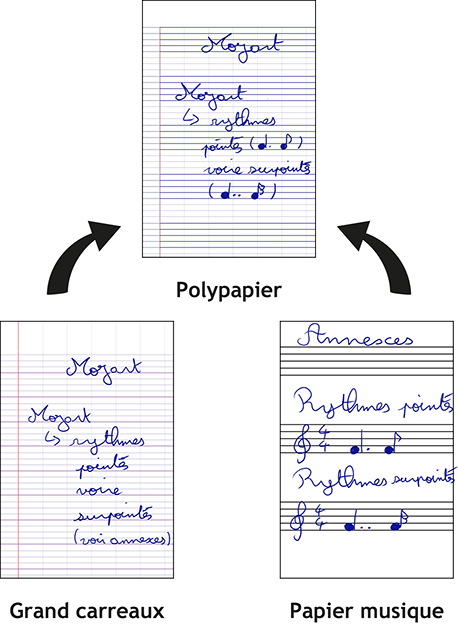

Voici Arno |

|
|
On lui a demandé d'acheter du papier musique parce qu'il a souvent besoin de prendre en notes du texte et de la musique. |
 |
Après avoir réalisé une étude de marché, Arno s'est dit qu'il devait partager son invention, mais n'ayant pas les moyens de la proposer en magasin de musique, il a décidé de vous la partager gratuitement ici.
Vous pouvez télécharger le modèle ici puis l'imprimer en autant d'exemplaires que vous le souhaitez. Le modèle est disponible en OpenSource.